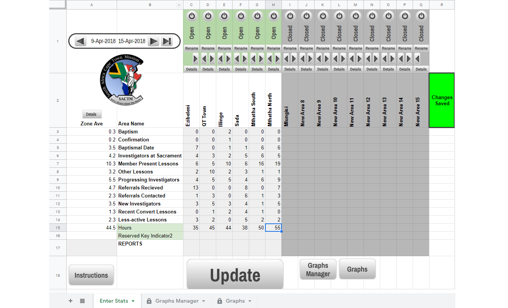
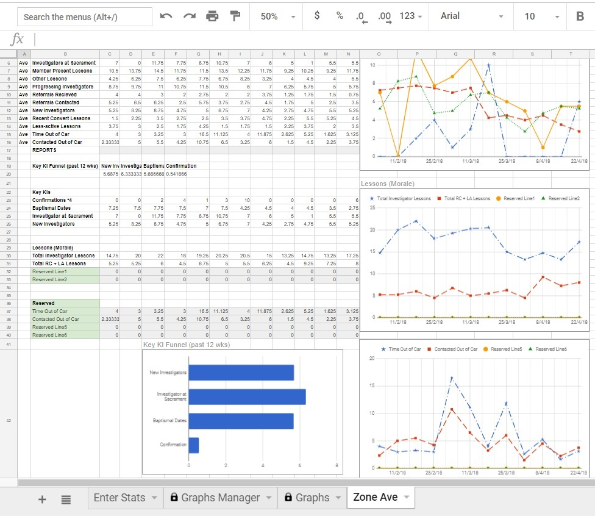
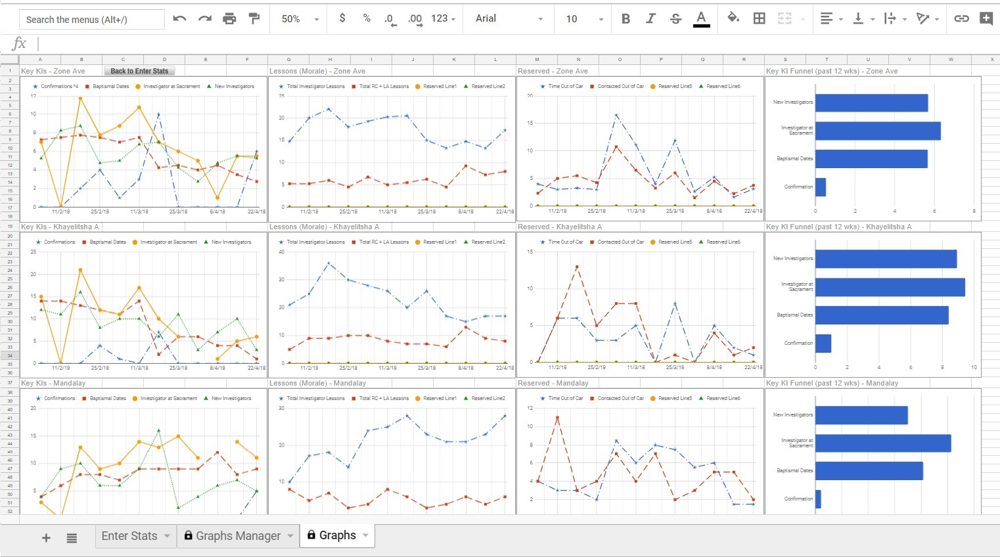

My Roles
Developer
Team
Size: 1
This is an individual project.
Tools and Languages
Google Sheets
Google Apps Script
My Contributions and Artefacts
User Interface
Designed and developed system according to users' needs, designed measures to prevent user input errors.
Learned to construct a GUI focused on facilitating work efficiency.

Data Management
Created a database using Google Sheets.
Learned to create a database and to add to and retrieve from it.

Data Visualization
Automated graph creation according to data from database and enabled users to customize graphs.
Learned how to categorize and represent data in ways meaningful to the end users.
